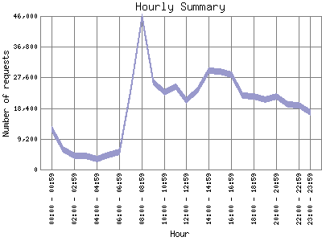

Analog 5.32
Analog 5.32 Report Magic 2.21
Report Magic 2.21The Hourly Summary identifies the level of activity broken down by each hour. Remember that one page hit can result in several server requests as the images for each page are loaded. This summary also compares the level of activity during working hours and after hours as a total for the report time frame.

| Hour | Number of requests | Percentage of the requests | |
|---|---|---|---|
| 1. | 00:00 - 00:59 | 12,001 | 2.62% |
| 2. | 01:00 - 01:59 | 5,974 | 1.31% |
| 3. | 02:00 - 02:59 | 4,002 | 0.88% |
| 4. | 03:00 - 03:59 | 4,162 | 0.91% |
| 5. | 04:00 - 04:59 | 3,029 | 0.66% |
| 6. | 05:00 - 05:59 | 4,407 | 0.96% |
| 7. | 06:00 - 06:59 | 5,327 | 1.16% |
| 8. | 07:00 - 07:59 | 23,932 | 5.23% |
| 9. | 08:00 - 08:59 | 45,757 | 10.00% |
| 10. | 09:00 - 09:59 | 26,182 | 5.72% |
| 11. | 10:00 - 10:59 | 23,145 | 5.06% |
| 12. | 11:00 - 11:59 | 24,751 | 5.41% |
| 13. | 12:00 - 12:59 | 20,620 | 4.51% |
| 14. | 13:00 - 13:59 | 23,745 | 5.19% |
| 15. | 14:00 - 14:59 | 29,540 | 6.46% |
| 16. | 15:00 - 15:59 | 29,372 | 6.42% |
| 17. | 16:00 - 16:59 | 28,536 | 6.24% |
| 18. | 17:00 - 17:59 | 22,118 | 4.83% |
| 19. | 18:00 - 18:59 | 21,861 | 4.78% |
| 20. | 19:00 - 19:59 | 20,961 | 4.58% |
| 21. | 20:00 - 20:59 | 21,972 | 4.80% |
| 22. | 21:00 - 21:59 | 19,611 | 4.29% |
| 23. | 22:00 - 22:59 | 19,367 | 4.23% |
| 24. | 23:00 - 23:59 | 17,078 | 3.73% |
| Work Hours (8:00am-4:59pm) | 251,648 | 55.01% | |
| After Hours (5:00pm-7:59am) | 205,802 | 44.99% | |
This report was generated on June 29, 2009 05:50.
Report time frame August 13, 2008 23:20 to June 29, 2009 00:00.
| Web statistics report produced by: | |
| Analog 5.32 | Report Magic 2.21 |